청소년상담사-3급(2교시)(구) (2015-03-28 기출문제)
1과목: 학습이론
1. 습관화(habituation)를 학습으로 보는 관점과 일치하는 것은?
- 특정 자극의 반복된 제시는 반사적 반응의 강도를 증가시킨다.
- 특정 자극의 반복된 제시는 감각수용기의 감식기능을 저하시킨다.
- 특정 자극의 반복된 제시로 인해 그 자극에 대한 반응에 연관된 근육이 피로해진다.
- 두 자극이 함께 발생할 때 자극 간 연합으로 인해 한 자극의 발생은 다른 것을 자동적으로 유발한다.
- 특정 자극의 반복된 제시는 그 자극에 반응하는 감각이나 근육을 연결하는 신경계에서 모종의 변화를 수반한다.
(정답률: 알수없음)

2. 티치너(E. Titchener)의 구성주의(structuralism) 심리학에 관한 설명으로 옳지 않은 것은?
- 분트(W. Wundt)의 주의설(voluntarism)을 수정 없이 계승했다.
- 인간의 정신작용에 대해 수동적 마음을 가정했다.
- 요소주의 관점에서 내성법을 사용하여 연구했다.
- 사고의 형성을 설명함에 있어 연합의 법칙을 강조했다.
- 대상을 지각할 때의 즉각적인 경험만 보고하고 그 대상에 대한 해석은 배제했다.
(정답률: 알수없음)
3. 다음 학습이론가들이 공통적으로 채택한 심리학적 패러다임은?
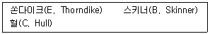
- 인지적 관점
- 기능주의 관점
- 구성주의 관점
- 진화론적 관점
- 신경생리학적 관점
(정답률: 70%)
4. 다음 학습의 정의에 근거할 때, 학습된 행동에 해당하는 것은?
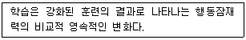
- 코가 간지러울 때 재채기를 한다.
- 겨울 철새들이 떼를 지어 이동한다.
- 감기약 복용으로 인해 졸음이 온다.
- 배고플 때마다 냉장고 안을 들여다본다.
- 뜨거운 냄비를 만졌을 때 즉각 손을 뗀다.
(정답률: 알수없음)
5. 학습 연구에서 인간 대신 동물을 대상으로 하는 이유로 적절한 것을 모두 고른 것은?
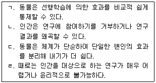
- ㄱ, ㄴ, ㄷ
- ㄱ, ㄴ, ㄹ
- ㄱ, ㄷ, ㄹ
- ㄴ, ㄷ, ㄹ
- ㄱ, ㄴ, ㄷ, ㄹ
(정답률: 50%)
6. 학습의 정의에 대한 스키너(B. Skinner)의 기본 입장과 일치하는 것은?
- 학습은 행동을 매개하는 과정이다.
- 학습은 행동의 변화 자체를 의미한다.
- 학습은 행동의 변화에 선행되어 나타난다.
- 학습과정은 행동의 변화를 통해 추론되어야 한다.
- 강화는 이미 학습된 행동을 동기화하는 과정일 뿐이다.
(정답률: 알수없음)
7. 다음의 사례에 해당하는 조건화의 개념은?
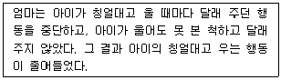
- 강화
- 벌
- 소거
- 조건 자극
- 변별
(정답률: 73%)
8. 부적 강화(negative reinforcement)에 해당하는 것은?
- 자리에서 이탈하는 학생에게 청소를 시켰더니 자리이탈 행동이 줄어들었다.
- 공부 시간 후에 자유 시간을 허용하였더니 공부 시간이 늘었다.
- 게임 시간 후에 공부 시간을 늘렸더니 게임 시간이 줄었다.
- 숙제를 제출한 학생에게 청소를 면제해 주었더니 숙제 제출 빈도가 늘었다.
- 교칙을 잘 지킨 학생에게 상을 주었더니 교칙을 잘 지키는 학생 수가 늘었다.
(정답률: 60%)
9. 행동과 벌에 관한 설명으로 옳은 것을 모두 고른 것은?
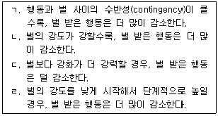
- ㄱ, ㄴ
- ㄱ, ㄷ
- ㄱ, ㄴ, ㄷ
- ㄱ, ㄷ, ㄹ
- ㄴ, ㄷ, ㄹ
(정답률: 40%)
10. 다음의 사례에서 설명하고 있는 개념은?
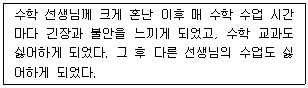
- 조건 억제
- 일반화
- 반응 조형
- 증상 대체
- 차별 강화
(정답률: 60%)
11. 2차 강화물(secondary reinforcers)에 해당하지 않는 것은?
- 사탕
- 토큰
- 상장
- 돈
- 칭찬 스티커
(정답률: 60%)
12. 다음 사례의 밑줄친 부분에 해당하는 개념이 순서대로 바르게 나열된 것은?
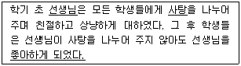
- 중성 자극 - 무조건 자극 - 무조건 반응
- 조건 자극 - 중성 자극 - 조건 반응
- 조건 자극 - 중성 자극 - 무조건 반응
- 중성 자극 - 조건 자극 - 무조건 반응
- 중성 자극 - 무조건 자극 - 조건 반응
(정답률: 알수없음)
13. 체계적 둔감법(systematic desensitization)에 관한 설명으로 옳은 것을 모두 고른 것은?
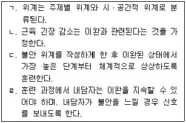
- ㄱ, ㄴ
- ㄱ, ㄹ
- ㄴ, ㄹ
- ㄱ, ㄴ, ㄹ
- ㄴ, ㄷ, ㄹ
(정답률: 알수없음)
14. 강화 계획에 관한 설명으로 옳은 것을 모두 고른 것은?
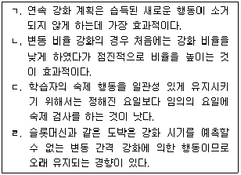
- ㄱ, ㄹ
- ㄴ, ㄷ
- ㄷ, ㄹ
- ㄴ, ㄷ, ㄹ
- ㄱ, ㄴ, ㄷ, ㄹ
(정답률: 알수없음)
15. 학습에 관한 사회인지이론의 일반 원리로 옳은 것을 모두 고른 것은?
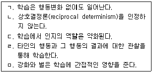
- ㄱ, ㄹ
- ㄹ, ㅁ
- ㄱ, ㄷ, ㄹ
- ㄱ, ㄹ, ㅁ
- ㄴ, ㄷ, ㅁ
(정답률: 46%)
16. 다음 ( )에 들어갈 용어들이 순서대로 바르게 나열된 것은?
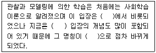
- 형태주의 - 행동주의 - 인지행동이론
- 행동주의 - 인지주의 - 인지행동이론
- 인지주의 - 행동주의 - 사회인지이론
- 인지주의 - 행동주의 - 인지행동이론
- 행동주의 - 인지주의 - 사회인지이론
(정답률: 30%)
17. 반두라(A. Bandura)의 관찰학습(모델링)의 과정 중 자기효능감이 가장 중요한 역할을 하는 과정은?
- 파지과정
- 인출과정
- 동기화과정
- 주의집중과정
- 동작재현과정
(정답률: 알수없음)
18. 자기조절학습을 하는 학습자의 특징에 해당하는 것은?
- 외재적으로 동기가 유발된다.
- 학습목표 없이 스스로 학습한다.
- 학습과정에 대한 점검활동이 없다.
- 인지, 동기, 행동을 적극적으로 조절한다.
- 메타인지전략보다 인지전략을 더 많이 사용한다.
(정답률: 67%)
19. 비고츠키(L. Vygotsky)의 관점에서 본 공동조절학습(co-regulated learning)에 관한 설명으로 옳지 않은 것은?
- 성인과 아동은 학습과정을 공유한다.
- 성인과 아동은 학습과제에 대한 특정 목표를 같이 설정한다.
- 성인이 성공적 학습의 준거를 설정하고 아동은 자신의 수행을 평가한다.
- 성인의 도움(scaffolding)은 학습의 초기부터 끝까지 같은 강도로 지속되어야 한다.
- 타인조절학습과 자기조절학습 사이에 공동조절학습이 있다.
(정답률: 70%)
20. 마이켄바움(D. Meichenbaum)의 자기조절행동을 향상시키는 단계가 순서대로 바르게 나열된 것은?
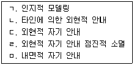
- ㄱ - ㄴ - ㄷ - ㄹ - ㅁ
- ㄱ - ㄴ - ㄷ - ㅁ - ㄹ
- ㄴ - ㄱ - ㅁ - ㄷ - ㄹ
- ㄴ - ㄷ - ㄱ - ㄹ - ㅁ
- ㄴ - ㅁ - ㄷ - ㄱ - ㄹ
(정답률: 60%)
21. 메타인지에 속하는 개념으로 보기 어려운 것은?
- 계획하기
- 저장하기
- 점검하기
- 수정하기
- 평가하기
(정답률: 50%)
22. '크레이크와 록하르트(Craik & Lockhart)의 처리수준(levels of processing)이론' 관련 연구들에 관한 설명으로 옳지 않은 것은?
- 단일 기억체계를 가정한다.
- 우연학습의 조건은 의도학습 조건의 결과만큼 우수하다.
- 표층처리가 심층처리만큼 중요하다는 것을 강조한다.
- 기억할 자료에 대한 정보처리수준의 중요성을 강조한다.
- 정교화 시연은 유지형 시연보다 심층처리가 잘 일어난다.
(정답률: 50%)
23. 단기기억에서 장기기억으로의 정보 전환에 관한 설명으로 옳지 않은 것은?
- 저장되어 있는 정보에 새로운 정보를 통합시키는 과정을 공고화(consolidation)라고 한다.
- 기억을 증진하기 위해서는 메타기억전략을 사용하는 것이 도움이 된다.
- 반복학습을 하면 해마(hippocampus)가 반복적으로 재활성화되면서 정보가 장기기억 체계에 통합된다.
- 주관적 조직화란 기억을 체제화 할 때 각 개인에 따라 자유로운 방식을 사용하는 것을 말한다.
- 집중학습은 분산학습보다 정보를 더 오래 기억하게 한다.
(정답률: 알수없음)
24. 장기기억에서의 지식의 표상에 관한 설명으로 옳지 않은 것은?
- 이중부호이론(dual-code theory)에 의하면 정보를 언어부호와 청각부호로 약호화하여 저장한다.
- 서술적 지식은 심리학용어와 같은 사실적 정보를 아는 것이다.
- 절차적 지식은 인지활동을 수행하는 방법을 아는 것이다.
- 조건적 지식은 서술적 및 절차적 지식을 언제 그리고 왜 채택해야 하는지 아는 것이다.
- 새 정보가 기존 정보와 연합될 수 있을 때에만 유의미학습은 일어날 수 있으므로 선행지식은 필요하다.
(정답률: 알수없음)
25. 뇌발달에 관한 설명으로 옳지 않은 것은?
- 시냅스(synapse) 과밀 현상은 청소년기에 가장 크게 나타난다.
- 뇌는 영역별로 발달 최적 시기 및 발달 속도가 다르다.
- 많이 사용하는 시냅스는 강화되는 반면 사용하지 않는 시냅스는 소멸된다.
- 코티졸(cortisol)은 시냅스의 수를 줄이고 뉴런(neurons)을 손상되기 쉬운 상태로 만든다.
- 과밀화된 시냅스가 소멸된 이후에도 학습은 뇌 구조에 영향을 미친다.
(정답률: 55%)
26. 다음에서 설명하는 뇌의 영역은?
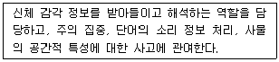
- 전두엽
- 두정엽
- 편도체
- 해마
- 측두엽
(정답률: 알수없음)
27. 욕구위계에 관한 매슬로우(A. Maslow)의 설명과 일치하지 않는 것은?
- 인간은 선천적으로 자아실현 경향성을 갖고 있다.
- 욕구위계에서 가장 하위 수준에 해당하는 것은 생리적 욕구이다.
- 소속 및 애정의 욕구와 자아존중욕구는 성장욕구에 해당한다.
- 욕구위계에서 가장 상위 수준에 해당하는 것은 자아실현욕구이다.
- 하위 수준의 욕구가 충족되지 않으면 상위 수준의 욕구는 만족될 수 없다.
(정답률: 54%)
28. 수행목표지향성보다 숙달목표지향성이 강한 학습자의 특성으로 옳은 것은?
- 지능에 관한 실체론적 신념을 갖는다.
- 학습 과정보다 학습 결과에 더 관심을 가진다.
- 과제 수행의 실패를 능력 부족에 귀인하는 경향이 있다.
- 새롭고 도전적인 과제를 학습할 때 더 큰 만족감을 느낀다.
- 공부하는 주된 이유는 타인과의 경쟁에서 이기는 것이다.
(정답률: 64%)
29. 이끌리스와 위그필드(Eccles & Wigfield)의 기대-가치 이론에 관한 설명으로 옳지 않은 것은?
- 기대 요인은 미래의 성공에 대한 개인적 신념을 말한다.
- 가치 요인은 흥미, 유용성, 비용 등을 포함한다.
- 학업성취 행동은 기대와 가치라는 두 개의 요인으로 예측될 수 있다.
- 정서적 기억은 목표와 자기도식을 매개로 개인의 기대에 영향을 미친다.
- 자기 자신의 유능성에 대한 영역특수적 판단들은 결과기대와 유사한 개념이다.
(정답률: 50%)
30. 학습동기와 정서의 관계에 관한 설명으로 옳은 것을 모두 고른 것은?
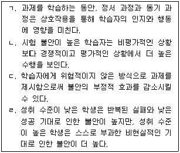
- ㄱ, ㄴ
- ㄱ, ㄷ
- ㄷ, ㄹ
- ㄱ, ㄴ, ㄹ
- ㄱ, ㄷ, ㄹ
(정답률: 50%)
2과목: 청소년이해론
31. 방어기제와 그에 대한 사례로 적절한 것을 모두 고른 것은?
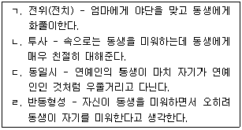
- ㄱ, ㄴ
- ㄱ, ㄷ
- ㄷ, ㄹ
- ㄱ, ㄷ, ㄹ
- ㄱ, ㄴ, ㄷ, ㄹ
(정답률: 알수없음)
32. 청소년기 인지발달의 일반적 특성으로 보기 어려운 것은?
- 불가역적 사고
- 추상적 사고
- 가설연역적 사고
- 가능성에 대한 사고
- 사고과정에 대한 사고
(정답률: 알수없음)
33. 엘킨드(D. Elkind)의 '상상속의 청중'에 관한 설명이 아닌 것은?
- 과장된 자의식으로 인해 타인의 집중을 받고 있다고 여긴다.
- 사소한 실수에도 크게 당황하고 작은 비난에도 심한 분노를 보인다.
- 자신을 불멸의 존재로 믿어서 위험하거나 무모한 행동을 서슴지 않는다.
- 형식적 조작사고가 가능해짐에 따라 자신의 생각과 관념에 사로잡혀 나타나는 현상이다.
- 다양한 대인관계 경험을 통해 타인도 나름대로의 관심사가 있다는 것을 이해하면서 점차 사라진다.
(정답률: 알수없음)
34. 콜버그(L. Kohlberg)의 도덕성발달이론에 따르면 다음에 제시된 영수의 발달단계는?
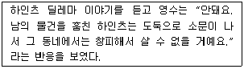
- 벌과 복종 지향 단계
- 착한 아이 지향 단계
- 법과 질서 지향 단계
- 사회 계약 지향 단계
- 보편 원리 지향 단계
(정답률: 알수없음)
35. 남자청소년의 성적(性的) 발달을 유발하는 대표적인 남성호르몬은?
- 스테로이드(steroid)
- 에스트로겐(estrogen)
- 프로게스테론(progesterone)
- 테스토스테론(testosterone)
- 프로스타글란딘(prostaglandin)
(정답률: 알수없음)
36. 브론펜브레너(U. Bronfenbrenner)의 생태학적 체계 중 생애 전반에 걸쳐 나타나는 변화와 사회역사적 환경을 의미하는 것은?
- 외체계
- 중간체계
- 미시체계
- 거시체계
- 시간체계
(정답률: 알수없음)
37. 프로이트(S. Freud)에 의하면 갈등을 피하기 위해 동성부모를 동일시하는 자녀의 발달단계는?
- 구강기(Oral)
- 항문기(Anal)
- 성기기(Genital)
- 잠복기(Latent)
- 남근기(Phallic)
(정답률: 알수없음)
38. 긴즈버그(E. Ginzberg)의 직업선택발달과정이 순서대로 바르게 나열된 것은?
- 현실적 단계 - 잠정적 단계 - 환상적 단계
- 잠정적 단계 - 환상적 단계 - 현실적 단계
- 환상적 단계 - 현실적 단계 - 잠정적 단계
- 환상적 단계 - 잠정적 단계 - 현실적 단계
- 잠정적 단계 - 현실적 단계 - 환상적 단계
(정답률: 알수없음)
39. 성격이론 중 과정이론에 해당하는 것을 모두 고른 것은?
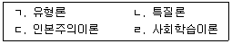
- ㄱ, ㄴ
- ㄷ, ㄹ
- ㄱ, ㄴ, ㄷ
- ㄴ, ㄷ, ㄹ
- ㄱ, ㄴ, ㄷ, ㄹ
(정답률: 알수없음)
40. 마르샤(J. Marcia)의 자아정체감 지위 중 무조건 엄마의 말에 순응하는 '마마보이'와 관련이 깊은 것은?
- 정체감유실
- 정체감혼미
- 정체감성취
- 정체감유예
- 정체감분리
(정답률: 알수없음)
41. 타인과의 관계와 의사소통의 중요성을 강조한 심리사회적 발달이론가는?
- 프로이트(S. Freud)
- 게젤(A. Gesell)
- 스탠리 홀(G. S. Hall)
- 헤켈(E. Haeckel)
- 설리반(H. Sullivan)
(정답률: 알수없음)
42. 청소년 의복문화의 일반적 특성으로 거리가 먼 것은?
- 소비적인 의복문화
- 충동적인 의복문화
- 전통을 고수하는 의복문화
- 동조와 비동조가 혼합된 의복문화
- 정체성 형성도구로서의 의복문화
(정답률: 알수없음)
43. 문화의 개념에 대한 총체론적 관점과 일치하는 것을 모두 고른 것은?
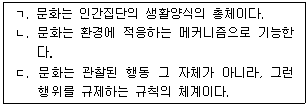
- ㄱ
- ㄱ, ㄴ
- ㄱ, ㄷ
- ㄴ, ㄷ
- ㄱ, ㄴ, ㄷ
(정답률: 55%)
44. 문화에 관하여 다음과 같이 주장한 학자는?
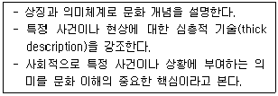
- 타일러(E. Tylor)
- 코헨(S. Cohen)
- 윌리스(P. Willis)
- 기어츠(C. Geertz)
- 구드이나프(W. Goodenough)
(정답률: 알수없음)
45. 부르디외(P. Bourdieu)가 제시한 것으로 '행위자의 물질적ㆍ비물질적 존재 조건에 의해 형성되며, 취향의 차이를 일관되게 조직하는 것'을 의미하는 용어는?
- 문화특질(cultural trait)
- 문화전계(enculturation)
- 아비투스(habitus)
- 패러다임(paradigm)
- 헤게모니(hegemony)
(정답률: 알수없음)
46. 청소년복지 지원법 제4조의 내용이다. ( )에 들어갈 숫자가 순서대로 옳은 것은?
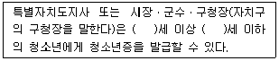
- 9, 18
- 9, 19
- 9, 24
- 13, 18
- 13, 19
(정답률: 알수없음)
47. 소년법상 소년에 대한 보호처분 결정의 종류로 명시되지 않은 것은?
- 수강명령
- 사회봉사명령
- 소년교도소 송치
- 장기 소년원 송치
- 1개월 이내의 소년원 송치
(정답률: 알수없음)
48. 청소년복지 지원법상 청소년복지시설 또는 청소년복지지원기관으로 명시되지 않은 것은?
- 청소년쉼터
- 청소년자립지원관
- 청소년치료재활센터
- 청소년성문화센터
- 이주배경청소년지원센터
(정답률: 알수없음)
49. 가정의 순기능으로 보기 어려운 것은?
- 청소년에게 만족을 주어 안정성의 기반이 된다.
- 사회생활에 필요한 습관, 예의, 태도 등을 학습하게 된다.
- 청소년의 능력을 계발하고 발달시키게 된다.
- 청소년의 사회적 인격 기반을 만들어 준다.
- 가족과의 인간관계를 통해 항상 자기중심적인 행동을 학습하게 된다.
(정답률: 70%)
50. 청소년을 둘러싸고 있는 지역사회 환경에 관한 설명으로 옳은 것은?
- 청소년문제의 확산은 지역사회의 유해한 사회문화적 환경과 관계가 없다.
- 제1차 사회화기관으로서 청소년 교육의 장이다.
- 청소년에게 유용한 자원들이 잠재되어 있지 않다.
- 주민들과의 다양한 사회적 상호작용 속에서 성장ㆍ발달하는 준거환경이다.
- 지역사회는 청소년의 삶의 질에 중요한 영향을 미치지는 않는다.
(정답률: 알수없음)
51. 바움린드(D. Baumrind)의 부모 유형분류에 따른 애정과 통제 차원에 관한 설명으로 옳은 것은?
- 권위있는(authoritative) 부모는 애정과 통제가 모두 낮다.
- 허용적 부모는 애정은 높고 통제는 낮다.
- 권위주의적(authoritarian) 부모는 애정과 통제가 모두 높다.
- 무관심한 부모는 애정은 낮고 통제는 높다.
- 무관심한 부모는 애정은 높고 통제는 낮다.
(정답률: 알수없음)
52. 청소년 보호법상 청소년 유해매체물을 방송해서는 안 되는 시간대로 옳은 것은?
- 평일은 오전 8시부터 오전 10시까지와 오후 3시부터 오후 10시까지
- 평일은 오전 8시부터 오전 10시까지와 오후 2시부터 오후 10시까지
- 방학기간은 오전 9시부터 오후 11시까지
- 토요일은 오전 7시부터 오후 10시까지
- 공휴일은 오전 8시부터 오후 11시까지
(정답률: 70%)
53. 서덜랜드(E. Sutherland)의 차별적 접촉이론에 관한 설명에 해당하는 것을 모두 고른 것은?
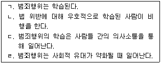
- ㄱ, ㄴ
- ㄷ, ㄹ
- ㄱ, ㄴ, ㄷ
- ㄴ, ㄷ, ㄹ
- ㄱ, ㄴ, ㄷ, ㄹ
(정답률: 알수없음)
54. 학교 부적응에 관한 설명으로 옳은 것을 모두 고른 것은?
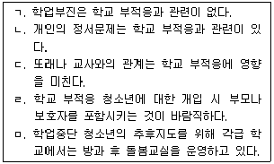
- ㄴ, ㅁ
- ㄷ, ㄹ
- ㄴ, ㄷ, ㄹ
- ㄱ, ㄷ, ㄹ, ㅁ
- ㄴ, ㄷ, ㄹ, ㅁ
(정답률: 알수없음)
55. 청소년 자살에 관한 설명으로 옳지 않은 것은?
- 청소년 자살의 경우는 자살 전조행동을 보이지 않는다.
- 우울증이나 약물남용은 청소년 자살의 원인 중 하나이다.
- 자살 시도는 여학생이 남학생보다 대체로 많은 편이다.
- 가족 간의 유대는 자살을 예방하는 보호요인이 된다.
- 입시위주의 교육환경은 청소년 자살과 관련이 있다.
(정답률: 알수없음)
56. 중추신경 억제제에 해당되지 않는 것은?
- 아편
- 필로폰
- 알코올
- 헤로인
- 모르핀
(정답률: 알수없음)
57. 청소년 가출의 위험요인으로 보기 어려운 것은?
- 충동성과 낮은 자기 통제력
- 가족의 구조적ㆍ기능적 결손
- 교우관계의 악화와 학업스트레스
- 가정의 낮은 소득수준
- 가족 간의 높은 응집력
(정답률: 알수없음)
58. 학교폭력예방 및 대책에 관한 법률상 학교폭력대책자치위원회가 피해학생의 보호를 위하여 학교의 장에게 요청할 수 있는 피해학생에 대한 조치사항으로 명시된 것을 모두 고른 것은?
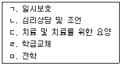
- ㄱ, ㄹ
- ㄴ, ㄷ, ㅁ
- ㄱ, ㄴ, ㄷ, ㄹ
- ㄱ, ㄴ, ㄷ, ㅁ
- ㄴ, ㄷ, ㄹ, ㅁ
(정답률: 알수없음)
59. 폭식증(bulimia)에 관한 설명으로 옳은 것은?
- 폭식 후에 구토나 단식이 뒤따른다.
- 왜곡되지 않은 신체상을 지닌다.
- 거식증보다 더 심각한 저체중이 나타난다.
- 폭식 후에 불안감이 감소한다.
- 여학생보다 남학생에게 더 많이 발생한다.
(정답률: 알수없음)
60. 다음은 청소년기본법 제12조의 내용이다. ( )에 들어갈 용어로 옳은 것은?
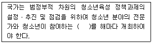
- 청소년운영위원회
- 청소년참여위원회
- 청소년발전위원회
- 청소년자치회의
- 청소년특별회의
(정답률: 알수없음)
3과목: 청소년수련활동론
61. 경험학습에 관한 설명으로 옳은 것은?
- 학습에서 과정보다 결과물을 강조한다.
- 지식위주의 행동변화를 강조한다.
- 학습활동 및 학습결과는 생활과 적절한 관련성을 가져야 한다.
- 교수자에 의한 일방적인 교수학습관계를 형성한다.
- 학습자의 흥미와 관심은 배제되어야 한다.
(정답률: 알수없음)
62. 청소년활동에서 몰입경험의 특성으로 옳지 않은 것은?
- 자신의 활동목적이 분명하다.
- 활동과제의 수준이 청소년의 능력수준보다 낮으면 몰입이 일어나게 된다.
- 미래의 혜택보다는 활동 자체에서 보상을 받으며 학습한다.
- 양적시간 개념이 상실된다.
- 현재 수행 중인 활동과제에 집중되어 있다.
(정답률: 알수없음)
63. 신라 화랑도의 세속오계(世俗五戒)가 아닌 것은?
- 교우이신(交友以信)
- 사친이효(事親以孝)
- 임전무퇴(臨戰無退)
- 살생유택(殺生有擇)
- 부부유별(夫婦有別)
(정답률: 0%)
64. 다음에서 공통으로 설명하는 프로그램 요구분석법은?
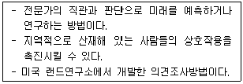
- 데이컴법
- 결정적사건분석법
- 개별이력법
- 델파이법
- 서베이법
(정답률: 알수없음)
65. 청소년프로그램개발의 접근이론에 관한 설명으로 옳지 않은 것은?
- 실증주의는 청소년을 수동적이고 피동적인 존재로 간주한다.
- 실증주의는 의도와 목표에 의해 내용을 결정하는 '목표-수단모델'의 성격이 강하다.
- 구성주의(constructivism)는 청소년을 의미창조의 주체적인 존재로 간주한다.
- 구성주의(constructivism)는 지식을 객관적 실재로 본다.
- 비판주의는 사회경제적 힘에 의한 인간의 억압상태를 해방시키는데 관심을 기울인다.
(정답률: 알수없음)
66. 모레노(J. Moreno)가 개발한 방법으로 집단구성원들 상호간의 선호, 무관심, 배척 등의 관계를 파악하여 집단 내 구성원간의 역학구조를 이해하는 것은?
- 브레인스토밍
- 패널토의
- 소시오메트리
- 감수성훈련
- 사례연구
(정답률: 알수없음)
67. 청소년수련활동 인증제에서 '활동프로그램' 영역에 해당하는 인증기준을 모두 고른 것은?
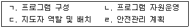
- ㄱ, ㄴ
- ㄱ, ㄷ
- ㄴ, ㄷ
- ㄴ, ㄹ
- ㄷ, ㄹ
(정답률: 알수없음)
68. 청소년기본법령상 청소년지도사 배치기준에 관한 내용이다. ( )에 들어갈 숫자가 순서대로 옳은 것은?
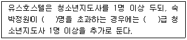
- 100, 1
- 300, 1
- 300, 2
- 500, 1
- 500, 2
(정답률: 알수없음)
69. 허쉬(P. Hersey)와 블랜차드(K. Blanchard)가 제시한 리더십 유형 중 지시적 행동도 높고, 지원적 행동도 높은 청소년지도자의 행동유형은?
- 위임형(delegating approach)
- 지원형(supporting approach)
- 코치형(coaching approach)
- 지시형(directing approach)
- 거래형(transactional approach)
(정답률: 알수없음)
70. 하트(R. Hart)가 제시한 청소년의 참여형태 중 청소년이 자신의 의견을 표출하긴 하지만, 청소년수련활동에는 전혀 영향을 미치지 못하는 상태에 해당하는 단계는?
- 명목주의(tokenism) 단계
- 성인주도(adult initiated) 단계
- 동등한 파트너십(equal partnership) 단계
- 상의와 통지(consulted and informed) 단계
- 제한적 위임과 통지(assigned but informed) 단계
(정답률: 알수없음)
71. 청소년지도방법의 특성에 관한 설명으로 옳지 않은 것은?
- 청소년지도방법은 목표를 달성하기 위한 의도적인 활동이다.
- 청소년지도방법은 목표를 달성하기 위한 비체계적인 활동이다.
- 청소년지도방법은 청소년의 자기주도적이고 능동적인 참여를 필요로 한다.
- 청소년지도방법은 청소년지도자와 청소년간의 상호작용 속에서 이루어진다.
- 청소년지도방법은 목표를 달성하기 위한 수단적인 성격을 지닌다.
(정답률: 알수없음)
72. 청소년기본법령상 청소년수련시설에 종사하는 청소년지도사는 2년마다 몇 시간 이상의 보수교육을 받아야 하는가?(관련 규정 개정전 문제로 여기서는 기존 정답인 3번을 누르면 정답 처리됩니다. 자세한 내용은 해설을 참고하세요.)
- 10시간
- 15시간
- 20시간
- 25시간
- 30시간
(정답률: 알수없음)
73. 청소년활동 진흥법령상 청소년수련지구에 설치하여야 하는 시설의 종류를 모두 고른 것은?
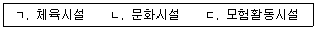
- ㄴ
- ㄱ, ㄴ
- ㄱ, ㄷ
- ㄴ, ㄷ
- ㄱ, ㄴ, ㄷ
(정답률: 알수없음)
74. 청소년활동 진흥법상 청소년활동시설의 종류 중 청소년수련시설로 명시되지 않은 것은?
- 과학관
- 유스호스텔
- 청소년야영장
- 청소년수련원
- 청소년문화의 집
(정답률: 알수없음)
75. 청소년활동 진흥법령상 청소년수련시설의 운영대표자로 선임해서는 안 되는 사람은? (단, 주어진 조건만 고려할 것)
- 1급 청소년지도사 자격증 소지자
- 2급 청소년지도사 자격증 취득 후 청소년육성업무에 3년 종사한 자
- 3급 청소년지도사 자격증 취득 후 청소년육성업무에 5년 종사한 자
- 「초ㆍ중등교육법」에 따른 정교사 자격증을 소지한 자로서 청소년육성업무에 1년 종사한 자
- 7급 일반직 공무원으로서 청소년육성업무에 3년 종사한 자
(정답률: 알수없음)
76. 청소년활동 진흥법 제2조(정의)에 관한 내용이다. ( )에 들어갈 숫자가 순서대로 옳은 것은?
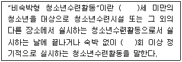
- 19, 1
- 19, 2
- 19, 3
- 24, 1
- 24, 2
(정답률: 알수없음)
77. 청소년활동 진흥법령에 제시된 수련시설 안전기준에 관한 설명으로 옳지 않은 것은?
- 비상연락장치를 유지하여야 한다.
- 매년 1회 이상 시설물에 대한 안전점검을 실시하여야 한다.
- 수련시설 종사자에 대하여 정기적으로 안전교육을 실시하여야 한다.
- 상병자(傷病者)에 대하여 응급처치를 할 수 있는 구호설비와 기구를 갖추어야 한다.
- 안전사고ㆍ응급환자 발생 등에 대비하여 긴급 후송대책 방안을 마련하여야 한다.
(정답률: 알수없음)
78. 청소년활동 진흥법령상 국제청소년교류활동의 지원에 관한 내용이다. ( )에 들어갈 용어로 옳은 것은?
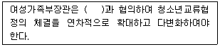
- 교육부장관
- 행정자치부장관
- 보건복지부장관
- 외교부장관
- 법무부장관
(정답률: 알수없음)
79. 청소년수련활동의 특성으로 보기 어려운 것은?
- 체험적 활동
- 청소년중심의 활동
- 타율적 활동
- 집단적이고 경험적 활동
- 도전적이고 모험적 활동
(정답률: 알수없음)
80. 청소년활동 진흥법상 국가 및 지방자치단체의 '청소년문화활동의 지원' 내용으로 명시되지 않은 것은?
- 전통문화의 계승
- 청소년문화활동의 기반 구축
- 청소년축제의 발굴지원
- 학교 교과과정 지원
- 청소년동아리활동의 활성화
(정답률: 알수없음)
81. 청소년활동 진흥법상 “숙박형등 청소년수련활동”의 계획을 해당 관청에 신고하지 않아도 되는 경우로 명시되지 않은 것은?
- 다른 법률에서 지도ㆍ감독 등을 받는 비영리 법인이 운영하는 경우
- 다른 법률에서 지도ㆍ감독 등을 받는 비영리 단체가 운영하는 경우
- 청소년이 부모 등 보호자와 함께 참여하는 경우
- 종교단체가 운영하는 경우
- 비숙박형 청소년수련활동 중 인증을 받아야 하는 활동인 경우
(정답률: 알수없음)
82. 청소년활동 진흥법령상 청소년운영위원회에 관한 설명으로 옳지 않은 것은?
- 청소년 수련시설운영단체의 대표자는 청소년운영위원회의 의견을 수련시설 운영에 반영해야 한다.
- 청소년운영위원회의 구성ㆍ운영 등에 필요한 사항은 대통령령으로 정한다.
- 청소년운영위원회는 10명 이상 20명 이하의 청소년으로 구성해야 한다.
- 위원의 임기는 1년으로 한다.
- 위원장은 위원 중에서 연장자로 한다.
(정답률: 알수없음)
83. 다음 내용들이 공통으로 해당되는 인증수련활동의 영역은?
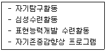
- 직업체험활동
- 자기계발활동
- 봉사활동
- 교류활동
- 건강ㆍ보건활동
(정답률: 알수없음)
84. 청소년활동 진흥법상 숙박기능을 갖춘 생활관과 다양한 청소년수련거리를 실시할 수 있는 각종 시설과 설비를 갖춘 종합수련시설은?
- 청소년수련원
- 청소년수련관
- 청소년문화의 집
- 청소년특화시설
- 청소년야영장
(정답률: 알수없음)
85. 청소년활동 진흥법상 청소년수련활동 인증에 관한 설명으로 옳지 않은 것은?
- 국가는 청소년수련활동의 내용과 수준을 향상시키기 위해서 청소년수련활동 인증제도를 운영해야 한다.
- 국가는 청소년수련활동 인증제도를 운영하기 위하여 청소년수련활동 인증위원회를 보건복지부에 설치ㆍ운영해야 한다.
- 국가는 인증수련활동을 공개해야 한다.
- 청소년수련활동 인증위원회는 청소년수련활동을 인증받은 자가 거짓이나 그 밖의 부정한 방법으로 인증을 받은 경우 인증을 취소해야 한다.
- 청소년수련활동 인증위원회의 인증을 받지 아니한 경우에는 인증을 받았음을 나타내는 표시를 하거나 이와 유사한 표시를 해서는 안 된다.
(정답률: 알수없음)
86. 청소년활동 진흥법상 청소년수련시설에서 청소년활동을 활성화하고 청소년의 참여를 보장하기 위해 운영해야 하는 청소년기구는?
- 청소년운영위원회
- 청소년참여위원회
- 청소년특별회의
- 청소년보호위원회
- 청소년정책위원회
(정답률: 알수없음)
87. 청소년활동 진흥법령상 인증을 받아야 하는 '위험도가 높은 청소년수련활동 프로그램'에 해당하는 것을 모두 고른 것은?
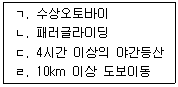
- ㄱ, ㄴ
- ㄴ, ㄷ
- ㄷ, ㄹ
- ㄱ, ㄴ, ㄷ
- ㄱ, ㄴ, ㄷ, ㄹ
(정답률: 알수없음)
88. 현행 교육과정의 창의적 체험활동에 관한 설명으로 옳지 않은 것은?
- 자율활동, 진로활동, 봉사활동, 동아리활동을 주요영역으로 한다.
- 지역사회의 인적ㆍ물적 자원을 계획적으로 활용하도록 한다.
- 기존 교과와 관계없는 내용으로 분리하여 실시하여야 한다.
- 영역별 시간 수는 학교의 특성을 고려하여 학교재량으로 배정한다.
- 학생의 자주적인 실천활동을 중시한다.
(정답률: 알수없음)
89. 국제청소년성취포상제에 관한 설명으로 옳지 않은 것은?
- 포상활동별 최소 활동기간을 충족하고 성취목표를 달성해야 포상을 받을 수 있다.
- 타인과의 경쟁을 강조하고 수행결과를 중시한다.
- 동장활동 영역에는 봉사, 자기개발, 신체단련, 탐험이 있다.
- 영국의 에딘버러 공작에 의해 시작되었다.
- 만 16세 미만 청소년은 금장활동에 참여할 수 없다.
(정답률: 알수없음)
90. 다음에서 공통으로 설명하는 것은?
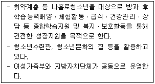
- 청소년어울림마당
- 방과후학교
- 워킹스쿨버스
- 청소년방과후아카데미
- 지역아동센터
(정답률: 알수없음)